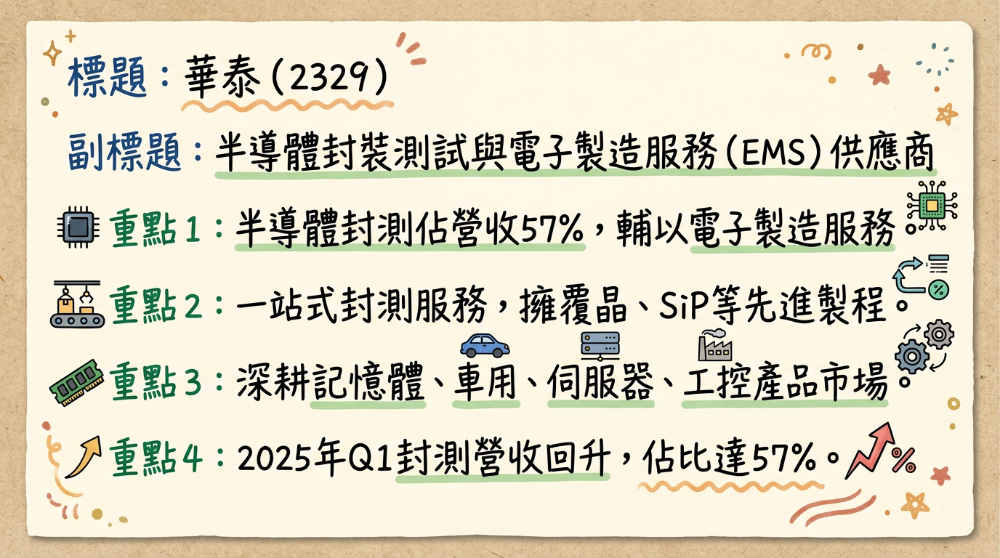
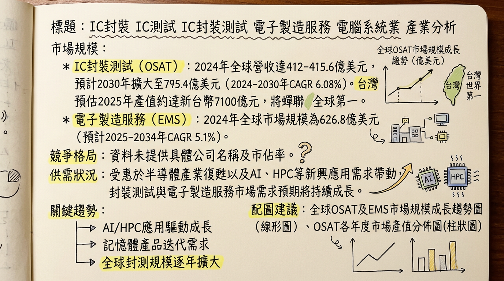
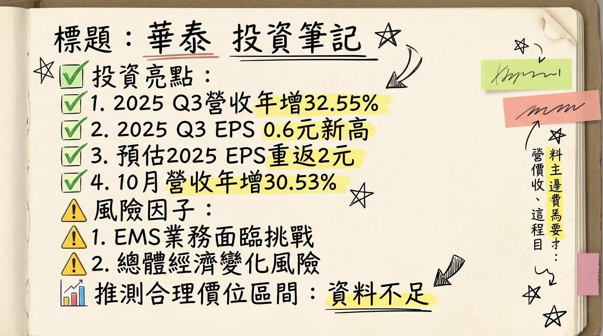

2329 華泰 深度研究報告
一句話摘要
華泰電子（2329）受惠於記憶體市場強勁復甦，NAND Flash封測訂單顯著增加，以及AI伺服器代工需求激增，帶動其營收與獲利顯著成長。公司積極拓展先進封裝技術與高利基市場，並展開產能擴充計畫，預期2026年營運有望再創佳績。
公司概覽
華泰電子成立於1971年，主要業務分為兩大事業中心：半導體封裝測試及電子製造服務（EMS）。
1. 核心產品與服務：
- 半導體封裝與測試業務： 提供客戶從晶圓測試、研磨、封裝到成品測試的一站式服務。主要以NAND Flash封測為主，亦涵蓋記憶體IC測試與封裝、邏輯IC測試與封裝服務。公司已量產覆晶封裝（Flip-chip）、結合覆晶與打線的混合式封裝（Hybrid Packaging）及系統級封裝（SiP）等多項先進製程。應用領域廣泛，包括記憶體、消費性電子、工業、車用、航太及通訊設備。
- 電子製造服務（EMS）業務： 主要提供印刷電路板組裝（PCBA），即SMT服務。產品應用重點在於伺服器、SSD（固態硬碟）及工業用產品、工控電子產品。
2. 營收結構 (截至2025年第一季/第三季)：
| 業務類別 | 佔全公司營收比重 | 備註 |
|---|
| 半導體封裝與測試 | 57% (2025Q1) | 其中記憶體相關產品佔半導體業務營收約80% |
| 電子製造服務 (EMS) | 38% (2025Q3) | 伺服器客戶佔EMS事業營收約70%，佔整體營收約30%+ (截至2026/1/19) |
華泰電子總部位於台灣高雄。公開資料未詳細列出各製造基地的具體營收貢獻比例。2026年2月25日董事會決議通過本公司「經一廠」的「結構預算追加暨廠務設施投資計畫」案，顯示高雄廠區內設有「經一廠」。
4. 所屬細分產業與相關題材：
- 所屬產業： 半導體業 (IC封裝、IC測試、IC封裝測試、電子製造服務、電腦系統業)
- 相關題材：
*
記憶體市場復甦與漲價： DDR4、DDR5及NAND Flash報價上漲，帶動封測訂單湧入，預期封測廠將調漲報價。
* AI伺服器與高速運算： AI晶片需求強勁，AI伺服器擴產推升封測及EMS代工需求。
* 高毛利產品比重提升： 積極擴充SSD與伺服器相關產能，加碼CSP BGA與Flip Chip封裝技術，推進車用與工控等高利基市場。
核心競爭優勢
一站式封測服務與NAND Flash專業能力： 華泰提供從晶圓測試到成品測試的Turnkey服務，並在NAND Flash記憶體封測領域具備深厚經驗與市場地位，受惠於記憶體市場周期性復甦。
先進封裝技術布局： 已量產覆晶封裝（Flip-chip）、混合式封裝（Hybrid Packaging）及系統級封裝（SiP）等先進製程，符合半導體產業對高階封裝技術的需求趨勢。
AI伺服器EMS代工利基： 作為AI伺服器大廠美超微（Supermicro）的EMS代工客戶，承接伺服器主機板PCBA業務，直接受益於AI伺服器爆發性成長帶來的訂單與較高平均銷售單價。
高利基市場拓展： 積極佈局車用與工控等高毛利市場，分散業務風險並提升產品組合的獲利能力。
產能滿載與議價能力提升： 由於市場需求強勁，公司產能利用率達滿載，成功將部分原物料成本反映在報價中，提升了議價能力和獲利空間。
財務分析
月營收趨勢
華泰電子 (2329) 近6個月月營收表現
| 月份 | 金額 (新台幣千元) | 月增率 MoM | 年增率 YoY |
|---|
| 2026年01月 | 1,678,535 | -3.03% | +38.53% |
| 2025年12月 | 1,730,924 | +1.48% | +22.78% |
| 2025年11月 | 1,705,637 | -0.68% | +21.7% |
| 2025年10月 | 1,717,420 | -1.42% | +30.53% |
| 2025年09月 | 1,742,109 | +3.21% | +31.05% |
| 2025年08月 | 1,687,855 | -3.99% | +26.03% |
| 2026年02月 | (資料未揭露) | | |
季度數據
華泰電子 (2329) 2025年第四季表現
- 季營收： 新台幣 5,153,981 千元 (約 51.54 億元)
- 毛利率： 15.35%
- 營業利益率： 約 8.19% (營業淨利 422,215 千元 / 營收 5,153,981 千元)
- 每股盈餘 (EPS)： 1.04 元
年度趨勢
華泰電子 (2329) 近兩年營收與EPS
| 年度 | 全年度營收 (新台幣千元) | 年增率 YoY | 全年度 EPS (元) |
|---|
| 2025年 (實際) | 19,683,310 | +20.92% | 2.45 |
| 2024年 (實際) | 16,277,440 | | 1.71 |
法說會重點
日期： 2025年11月14日
管理層發言與具體Guidance：
- 半導體封測業務： 受惠於記憶體市場復甦，NAND Flash、DDR4及DDR5封測代工訂單增加，產能利用率處於高檔水準。記憶體報價上漲，庫存回復健康水位，推升下游封測訂單。市場預期封測廠將從2025年底至2026年分階段調漲報價，調幅約在高個位數至兩位數不等。
- EMS業務： 受益於AI伺服器需求，表現依然強勁。伺服器及工控需求穩定，展望正面。
- 產能利用率： 目前產能爆滿，且處於高檔水準。
- 資本支出金額： 法說會當時未提供2025-2026年的最新具體資本支出金額，但公司在先進製程能力（如25um晶圓厚度、16層堆疊、SiP/Flip Chip等）和數位化MES自動化系統上的投資，將鞏固競爭地位。
- 2025年第四季展望： 營運有望居高表現，但預期可能較第三季稍降。
- 2026年展望： 預期2026年有望再創佳績。封測產業的接單狀況、產能利用率與報價皆呈現向上趨勢，華泰具備2025至2026年的中期成長可見度。
券商觀點
華泰電子 (2329) 券商目標價與評等
| 券商名稱 | 目標價 (新台幣元) | 評等 | 日期 |
|---|
| (未找到) | (未找到) | (未找到) | (未找到) |
| (未找到) | (未找到) | (未找到) | (未找到) |
| (未找到) | (未找到) | (未找到) | (未找到) |
目前未找到2025-2026年券商對華泰的具體EPS預估數字。市場普遍預期華泰2025年EPS有機會重返2元以上（實際已達2.45元）。
評等調升/調降：
近期未發現針對華泰的重大券商評等調升或調降資訊。
財報深度分析
利潤率趨勢
華泰電子 (2329) 近八季毛利率、營業利益率、稅後淨利率
| 季度 | 毛利率 (%) | 營業利益率 (%) | 稅後淨利率 (%) |
|---|
| 2025Q4 | 15.35 | 8.19 | 7.84 |
| 2025Q3 | 16.31 | 9.12 | 8.33 |
| 2025Q2 | 14.97 | 7.98 | 7.36 |
| 2025Q1 | 13.21 | 4.83 | 4.59 |
| 2024Q4 | 13.63 | 4.65 | 4.81 |
| 2024Q3 | 12.79 | 4.78 | 4.53 |
| 2024Q2 | 14.18 | 6.43 | 8.71 |
| 2024Q1 | 19.79 | 12.41 | 11.96 |
- IC封測業務復甦與價格調漲： 華泰IC封測業務營收自2024年第三季度觸底後強勁復甦，2025年第三季度佔總營收比重上升至62%。主要受惠於記憶體市場轉為賣方市場與客戶積極備貨。2025年5月，NAND Flash封測及模組代工產線滿載，新訂單報價成功調漲10-15%，並於2025年11月起逐步反映原料成本於報價，推升了毛利率表現。
- EMS業務挑戰與AI伺服器需求： EMS業務營收在2025年第二季度達高峰後略有下滑，2025年第三季度佔總營收比重降至38%。儘管AI伺服器需求強勁，但其他EMS領域表現可能拖累整體業務成長。
- 匯率影響： 2025年第一季度法說會曾提及，新台幣升值預計將對毛利率造成約3-4%的影響，為獲利主要挑戰之一。
存貨分析
華泰電子 (2329) 近四季存貨及應收帳款週轉天數
| 季度 | 存貨週轉天數 (天) | 應收帳款收現天數 (天) |
|---|
| 2025Q4 | 46.75 | 85.15 |
| 2025Q3 | 39.68 | 88.66 |
| 2025Q2 | 36.76 | 76.87 |
| 2025Q1 | 42.51 | 89.03 |
| 2024Q4 | 42.38 | 88.71 |
- 存貨狀況： 2025年第四季度存貨週轉天數略增至46.75天，較第三季度的39.68天有所放緩，可能暗示備料增加或市場去化速度微調。然而，2025年第一季至第三季度的平均存貨週轉天數為39天，較2024年同期（45天）有所改善，顯示長期存貨管理趨勢向好。
資本支出
*
2024年： 前三季約新台幣13億元，全年預估將超過15億元。
* 2025年： 預估資本支出將低於2024年，約落在過去平均值約新台幣12億元上下，以謹慎因應市況及客戶需求。
* 2023年： 未找到具體金額，但公司表示「這幾年已進行一波投資計畫」。
*
2026年2月25日： 董事會決議通過經一廠「結構預算追加暨廠務設施投資計畫」案，預計投資新台幣約16.6億元用於擴充產能，此為2022年楠梓產業科技園區廠房投資預算之追加。
* 華泰將持續積極配合AI伺服器推動高容量記憶體需求進行布局發展，並與頎邦策略合作開展覆晶封裝新業務，預計2025年對營收貢獻將持續提升。
* 2025年第三季度IC產能利用率維持高檔，顯見產能擴充的必要性。
- 折舊攤銷趨勢： 未找到2024-2026年的最新折舊攤銷具體數字與趨勢資料。
其他財報重點
負債比率趨勢
- 2025Q4: 46.15%
- 2025Q3: 42.11%
- 2025Q2: 45.1%
- 2025Q1: 41.74%
- 2024Q4: 40.77%
- 2025年第三季法說會報告指出，負債比率優化顯示財務體質有所改善。
自由現金流量趨勢
* 2025Q1: -0.62
* 2024Q4: 1.82
* 2024Q3: 1.86
* 2024Q2: 2.02
* 2024Q1: 0.46
* 2025Q4: 1.81
* 2025Q3: 0.94
* 2025Q2: -0.04
* 2025Q1: 0.24
* 2024Q4: 1.05
- 2025年第三季法說會報告提及，現金部位顯著減少，可能與資本支出或營運週轉需求有關。
業外收支佔營收比率
- 2025Q4: 1.14%
- 2025Q3: 1.27%
- 2025Q2: -0.21%
- 2025Q1: 0.85%
- 2024Q4: 0.78%
- 2024Q3: 0.84%
股權異動
1. 近期董監事/大股東申報轉讓紀錄：
- 2025年11月： 董事頎邦科技股份有限公司申報轉讓私募股票11,924,671股，佔發行股數2.13%。
- 2024年6月： 經理人洪士(王民)信託轉讓500,000股 (2,350張)。
- 截至2026年1月，大股東頎邦科技股份有限公司持股234,317張，持股比率為35.56%。
2. 庫藏股買回紀錄：
3. 可轉換公司債（CB）發行紀錄：
- 未找到2024-2026年發行可轉換公司債的相關資料。
4. 現金增資或減資計畫：
5. 股利政策：
華泰電子 (2329) 近三年現金股利發放紀錄
| 年度 | 現金股利 (元/股) | 除息日 | 發放日 |
|---|
| 2026年 | 1.0 | (待定) | (待定) |
| 2025年 | 1.0 | 2025/06/26 | 2025/07/23 |
| 2024年 | 1.19 | 2024/06/26 | 2024/07/24 |
產業分析
市場規模和 CAGR 成長率
半導體封裝與測試 (OSAT) 市場：
- 2024年： 全球OSAT市場營收達到412億美元，年增5%。
- 2025年： 全球OSAT市場規模預計將再成長5%至突破430億美元，整體封測產業成長9%。
- CAGR： 預計全球OSAT市場從2024年的401.3億美元擴大至2030年的795.4億美元，CAGR為6.08%。
- 台灣： 經濟部預估2025年封裝測試產值約達新台幣7100億元，將持續蟬聯全球第一。
電子製造服務 (EMS) 市場：
- 2024年： 全球EMS市場規模為626.8億美元。
- 2025年： 全球EMS市場規模估計為6481.1億美元，預計2026年將成長至6898.6億美元。
- CAGR： 預計從2025年到2034年的CAGR為5.1%；另一預測指出，預計2025年市場規模將超過6,354.9億美元，到2035年達到1.17兆美元，CAGR約為6.3%。
供需狀況
* 2024年隨著半導體產業庫存調整結束，市場備貨需求回升，OSAT市場回穩。
* 2025年地緣政治風險導致供應鏈提前備貨，對OSAT形成短期支撐，但可能導致下半年拉貨動能提前透支。
* AI晶片需求旺盛，推動封測廠積極擴產搶單。台積電先進封裝（如CoWoS）產能爆滿，預計缺口延續至2026年。
* 記憶體供應吃緊與價格高漲，將持續至2026年，華泰受惠NAND等記憶體封測急單與AI伺服器需求爆量，產線全滿，並在2025年5月成功調漲報價10-15%。
* 2025年全球前20大EMS/ODM業者合計營收年成長23.4%，主要來自AI基礎設施擴張及蘋果產品升級。
* AI伺服器仍處於供不應求狀態，預計持續推升EMS業者的營運增長，使EMS營運擺脫傳統淡旺季規律。
產業的平均毛利率水準
目前未找到2024-2026年全球半導體封裝測試或電子製造服務產業的平均毛利率水準的具體數據。華泰電子自身的營業毛利率在2025年第四季為15.35%。
競爭格局
全球前 5 大專業封測代工 (OSAT) 公司及其市佔率 (2024年)
(根據TrendForce報告，前十大合計營收為415.6億美元)
| 排名 | 公司名稱 | 2024年營收 (億美元) | 年增率 | 市佔率 (前十大占比) |
|---|
| 1 | 日月光投控 | 185.4 | 持平 | 44.6% |
| 2 | Amkor (安靠) | 63.2 | -2.8% | - |
| 3 | 長電科技 | 50 | 19.3% | - |
| 4 | 通富微電 | 33.2 | 5.6% | - |
| 5 | 力成科技 | 22.8 | 1% | - |
(根據DIGITIMES報告，2025年台灣業者整體營收比重回升至70.2%)
| 排名 | 公司名稱 | 2025年營收 (億美元) | 年增率 |
|---|
| 1 | 鴻海 | 2610 | 22.4% |
| 2 | 緯創 | 706 | 116.2% |
| 3 | 廣達 | 682 | 55.6% |
| 4 | 立訊精密 | 未提供具體營收 | - |
| 5 | 和碩 | 未提供具體營收 | - |
| 項目 | 華泰電子 (2329) | 主要競爭對手 (OSAT) | 主要競爭對手 (EMS) |
|---|
| 核心業務 | 半導體封裝與測試 (NAND Flash為主)、EMS (PCBA) | 全方位IC封裝測試服務 (日月光、Amkor) | 伺服器、PC、手機等大型電子產品製造 (鴻海、緯創、廣達) |
| 技術特點 | Flip-chip、Hybrid Packaging、SiP等先進製程 | 高階扇出型封裝、2.5D/3D封裝、CoWoS等領先技術 | 系統級組裝、整機代工、供應鏈整合 |
| 主要客戶 | 金士頓、群聯、江波龍 (封測)；美超微 (EMS) | AMD、NVIDIA、高通等晶片大廠 (日月光、Amkor) | Apple、HP、Dell、AWS、Google等大型品牌商與雲端服務商 |
| 市場地位 | NAND Flash封測利基市場領導者，AI伺服器EMS代工商 | 全球OSAT龍頭 (日月光)，先進封裝關鍵夥伴 (Amkor) | 全球EMS/ODM巨頭 (鴻海)，AI伺服器供應商 (緯創、廣達) |
| 價格與產能 | 產線全滿，新訂單報價成功調漲10-15% (2025/5) | 龍頭廠產能利用率高，具較強議價權 (日月光) | AI伺服器供不應求，大型廠具規模經濟與議價能力 |
| 項目 | 華泰電子 (2329) | 日月光投控 (3711) | 力成科技 (6239) | 京元電子 (2449) |
|---|
| 營收 (2025年) | 196.83億元 | 185.4億美元 (2024年) | 22.8億美元 (2024年) | 9.1億美元 (2024年) |
| 毛利率 (2025Q4) | 15.35% | (未揭露) | (未揭露) | (未揭露) |
| EPS (2025年) | 2.45元 | (未揭露) | (未揭露) | (未揭露) |
| 業務重點 | NAND Flash封測, AI伺服器EMS | 全方位半導體封測龍頭 | 儲存晶片封裝, HBM | 專業測試服務領導者 |
產業趨勢
AI、HPC與先進封裝技術的快速發展：
* 影響： AI/HPC晶片需求激增，推動半導體封裝測試與EMS市場成長。加速2.5D/3D IC、扇出型封裝、晶圓級封裝等先進封裝技術應用與產能擴張。台積電CoWoS產能預計從2024年33萬片倍增至2025年66萬片，年增100%。FOPLP也預計從2025年起快速成長。
記憶體市場復甦與高頻寬記憶體 (HBM) 的需求激增：
* 影響： NAND Flash需求強勁，記憶體大廠（如三星、SK海力士）將產能轉向DDR5、HBM等高階產品。這不僅加速記憶體市場復甦，也同步帶旺後端封裝應用，對封測廠商的技術能力和產能提出更高要求。
地緣政治影響下的供應鏈重組與區域化：
* 影響： 地緣政治風險促使全球半導體供應鏈重組。中國大陸在政策支持下OSAT產業持續擴張，對台灣業者構成挑戰。台灣廠商加速在台灣及東南亞布局產能，深耕AI晶片先進封裝技術，鞏固高階晶片封裝領域優勢。
對華泰電子而言的具體機會和威脅：
*
AI伺服器商機： 作為美超微EMS代工客戶，直接受益於AI伺服器訂單爆發性成長與較高ASP。
* 記憶體市場回溫： NAND Flash等記憶體市場復甦帶來更多封測訂單，推動營收增長。
* 先進封裝布局： 已量產Flip-chip、Hybrid Packaging、SiP等先進技術，提升競爭力。
* 產能滿載與議價能力： 強勁需求帶動產線滿載，成功調漲報價，有助於提升獲利。
* 汽車電子領域： 車載產品已獲認證並將陸續量產，搭上電動車產業成長列車。
*
消費性市場疲軟： 手機、筆記型電腦等消費性市場若持續疲弱，可能壓抑部分業務。
* 地緣政治競爭： 中國大陸封測廠商崛起可能加劇市場競爭。
* 大型EMS/OSAT廠的競爭： 在AI伺服器領域，大型ODM/EMS廠「大者恆大」格局可能使華泰面臨更激烈競爭。
相關投資題材的具體連結：
- AI (人工智慧)： 華泰是AI伺服器供應商美超微的EMS代工客戶，直接受益於AI伺服器訂單。公司積極深化AI伺服器產業鏈，擴展伺服器與儲存解決方案市場。
- HBM (高頻寬記憶體)： 雖無直接HBM封測資料，但華泰主力業務為NAND Flash等記憶體封測，且深耕高端封測技術。AI對HBM需求激增，有望間接受益於高階記憶體發展帶動的封測需求。
- 電動車： 華泰EMS業務已投入車載產品認證與量產，搭上全球電動車轉型對電子元件需求增長的趨勢。
近期催化劑
- 2026年3月1日： 公告2025年第四季營收51.5398億元，季減0.66%，年增24.88%；歸屬母公司稅後淨利4.039億元，季減6.51%，年成長約103.6%，EPS 1.04元。2025年度累計營收達196.8331億元，年增20.92%；累計EPS為2.45元，年成長43.27%。
- 2026年2月26日： 盤中股價急拉4.28%，報59.4元。
- 2026年2月25日： 董事會決議發放2025年現金股利每股1.0元。同時決議分派丙種特別股股息、註銷限制員工權利新股之減資基準日，並公告取得廠務工程與通過經一廠「結構預算追加暨廠務設施投資計畫」案，預計投資新台幣約16.6億元。
- 2026年2月7日： 公告2026年1月合併營收16.79億元，月減3.03%，年增38.53%。為2025年4月以來新低，但年增率仍顯著。
- 2026年1月19日： 營運動能回升，主因記憶體封測與伺服器代工需求回溫。公司積極擴充SSD與伺服器相關產能，並加碼CSP BGA與Flip Chip封裝技術，推進車用與工控等高利基市場。主要封測客戶追單，華泰產能已達滿載，並將部分原物料成本反映在報價中，使封測端營業動能延續至2026年初。
- 2026年1月14日： 華泰股價盤中一度急拉至63.7元，漲幅達6.34%。近5日三大法人合計買超8,288張。
- 2026年1月9日： 公告2025年12月合併營收17.31億元，月增1.48%、年增22.78%，創近3個月新高。累計2025年營收約196.83億元，年增20.92%。
- 2025年12月26日： 受惠記憶體需求上揚、價格上漲，以及NAND Flash、DDR4、DDR5封測代工訂單增加，加上AI伺服器代工訂單增多，華泰產能利用率維持高檔水準，2026年展望樂觀。
- 2025年12月21日： 記憶體市況持續升溫，DDR4、DDR5及NAND Flash價格接連大漲，後段封測訂單蜂擁而入，產能利用率拉升。封測廠陸續對不同產品線與客戶協商漲價，漲幅從高個位數到兩位數百分比不等。
- 2025年12月11日： 記憶體市場復甦與急單效應，報價上漲。市場傳出封測報價將從2025年底至2026年分階段調漲，華泰有望直接受惠。
- 2025年11月14日： 法說會指出半導體封測業務強勁，EMS業務面臨挑戰，但公司投資先進製程和自動化系統將鞏固競爭地位。
- 2025年11月2日： 公布2025年第三季營收達新台幣51.88億元，年增32.55%，EPS 0.6元，創近六季新高。法人預期華泰產能已達滿載，2025年第四季營運有望維持高檔，全年營收挑戰2019年高點，EPS有機會重返2元。
⭐ 成長動能時間軸
| 時間點 | 成長動能類別 | 具體事件與量化說明 |
|---|
| 2025年5月 | 需求面/產能 | 因NAND等記憶體封測急單與AI伺服器需求爆量，華泰產線全滿，新訂單報價成功調漲10-15%。 |
| 2025年11月2日 | 產能擴充 | 華泰公布2025年第三季營收創近六季新高，法人預期華泰產能目前已達滿載。 |
| 2025年11月14日 | 資本支出 | 法說會提及公司在先進製程能力與數位化MES自動化系統上的投資，鞏固競爭地位。 |
| 2025年底起 | 需求面/價格 | 市場傳出封測報價將從2025年底至2026年分階段調漲，調幅約在高個位數至兩位數不等。 |
| 2026年1月19日 | 新客戶/新市場 | 公司積極推進車用與工控等高利基市場，同時擴充SSD與伺服器相關產能，並加碼CSP BGA與Flip Chip封裝技術。 |
| 2026年1月19日 | 需求面/產能 | 主要封測客戶追單，華泰產能已達滿載，且公司已將部分原物料成本反映在報價中，營運動能延續至2026年初。 |
| 2026年2月25日 | 擴廠計畫/資本支出 | 董事會通過經一廠「結構預算追加暨廠務設施投資計畫」案，預計投資新台幣約16.6億元用於擴充產能。此為2022年楠梓產業科技園區廠房投資預算之追加。 |
| 2026年 | 需求面 | AI伺服器擴產、光通訊升級以及記憶體漲價這三股力量同步推升，封測產業接單狀況、產能利用率與報價皆呈現向上趨勢。 |
2026 展望
成長動能：
華泰電子在2026年有望持續受惠於三大核心成長動能：
記憶體市場強勁復甦與漲價： DDR4、DDR5及NAND Flash報價持續上漲，記憶體客戶積極備貨，將帶動華泰封測訂單持續增加，產能利用率維持高檔，並可能進一步推升報價。
AI伺服器需求爆發： 作為美超微（Supermicro）的重要EMS代工夥伴，華泰將直接承接AI伺服器主機板的委外代工需求，此業務具有較高的平均銷售單價，為公司帶來顯著的營收增長與獲利提升。
先進封裝技術與高利基市場拓展： 公司積極布局覆晶封裝（Flip-chip）、SiP等先進封裝技術，並擴大在車用、工控等高毛利利基市場的應用，有助於優化產品組合並提升整體獲利能力。
法人普遍對華泰2026年的營運展望持樂觀態度，認為其具備中期成長可見度，並有望再創佳績。
風險因子：
- 股價壓力： 華泰股價在68.00元附近面臨技術性關鍵壓力，可能遭遇獲利了結賣壓，突破需巨量。
- EMS業務表現波動： 儘管AI伺服器需求強勁，但若其他EMS業務領域持續面臨挑戰，可能影響整體營收增長。
- 財務健康狀況關注： 應收帳款與存貨週轉天數環比惡化，以及現金及約當現金減少，可能暗示營運現金流壓力或資金運用效率需密切關注。長期與短期借款增加也需考量其償債能力。
- 外資調節： 部分外資在股價區間震盪中出現逢高減碼跡象，可能對股價形成壓力。
- 營收動能高檔震盪： 近幾個月月營收的月增率變化不大，暗示營收成長動能已暫時處於高檔平台期，若後續無法再加速，則股價上漲空間可能受限。
- 總體經濟與地緣政治風險： 全球經濟不確定性，以及地緣政治變動可能導致供應鏈進一步重組或需求波動，例如部分國家對高科技晶片出口的管制，可能影響美超微及其供應鏈的運營。
投資結論
華泰電子在半導體產業的關鍵轉折點上，透過雙引擎策略（記憶體封測與AI伺服器EMS）展現出強勁的成長潛力。
AI與記憶體雙重催化，獲利動能強勁： 公司成功卡位記憶體市場復甦及AI伺服器浪潮，NAND Flash封測訂單滿載並成功調漲報價，同時作為美超微關鍵供應商，直接受益於AI伺服器擴張，預計將帶動營收與獲利持續增長。
先進技術布局與產能擴充，中期成長可見： 華泰在Flip-chip、SiP等先進封裝技術的投入，以及2026年2月經一廠約16.6億元的產能擴充計畫，將鞏固其在高階封測市場的競爭力，為2026年及往後年度的營運奠定基礎。
產品組合優化，毛利率有望維持高檔： 公司積極拓展車用、工控等高利基市場，結合記憶體報價調漲效應，有助於維持及提升整體毛利率表現，進而推動EPS成長。
留意潛在風險，保持追蹤： 儘管成長動能強勁，但仍需關注EMS業務多元化策略的成效、現金流與負債變化對財務體質的影響，以及整體市場的宏觀經濟與地緣政治風險。
目標價區間建議： 考量華泰在AI與記憶體產業鏈中的獨特地位，以及其過去一年顯著的營收與獲利成長，配合產能擴充帶來的未來動能，建議投資人可以關注其長期成長趨勢。基於2025年EPS 2.45元及2026年營運有望再創佳績的預期，若市場給予2026年EPS約25-30倍本益比，建議合理目標價區間為 新台幣75元至85元。
本報告由 AI 自動產生，資料來源為公開網路資訊，僅供參考，不構成投資建議。產生時間：2026-03-06 00:21
📊 資訊卡


